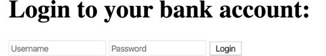
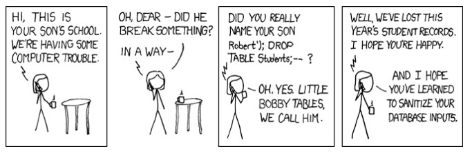

Prof. Dr. Lukas Iffländer
HTW Dresden
30.07.2026
Ziel
Wie alle Command Injections ist SQL Injection möglich, wenn eine Anwendung unsichere Nutzereingaben mit SQL-Query-Templates verknüpft.

const { username, password } = req.body
// { username: '" OR 1=1 --', password: '...' }
const query = `SELECT * FROM users WHERE username = "${username}"`
// SELECT * FROM users WHERE username = "" OR 1=1 --"
const results = db.all(query)
// all rows in the users table!
if (results.length > 0) {
// will always be true!
}app.post('/login', (req, res) => {
const { username, password } = req.body
const query =
`SELECT * FROM users WHERE username = "${username}" AND password = "${password}"`
db.get(query, (err, row) => {
if (err) {
console.error(err)
res.send('fail!')
return
}
if (!row) {
res.send('fail!')
return
}
/* Success */
})
})bob" --: als Benutzer bob anmelden" OR 1=1 --: als erster Benutzer anmelden" OR balance > 1000000 --: als erster Millionär anmeldenAnders als db.get kann db.exec mehrere Queries ausführen
Nutzernamen ausprobieren (Passwort beliebig)

Ziel
Inhaltsbasiert
if (content == "true") { ... }Zeitbasiert
async function init() {
process.stdout.write('Trying')
let char = CHAR_START
while (char <= CHAR_END) {
const position = password.length + 1
const query = `${USERNAME}" AND CASE
SUBSTR(password,${position},1) WHEN CHAR(${char}) THEN
123=LIKE('ABCDEFG',UPPER(HEX(RANDOMBLOB(100000000/2))))
ELSE null END --`xp_cmdshell, um eine Shell zu öffnen und den übergebenen Befehl auszuführen.
✓ SQL-Injection-Angriffe erkennen und erklären
✓ klassische, blinde und zeitbasierte SQL Injection unterscheiden
✓ verwundbaren Code identifizieren
✓ Schutzmaßnahmen anwenden: parameterisiertes SQL und ORM
Kernbotschaft
Niemals SQL Queries durch String-Konkatenation erstellen.
Immer parameterisiertes SQL oder ORMs verwenden.
SQL Injection
Prof. Dr. Lukas Iffländer
HTW Dresden
30.07.2026
30.07.2026 / SQL Injection / HTW Dresden / Prof. Dr. Lukas Iffländer